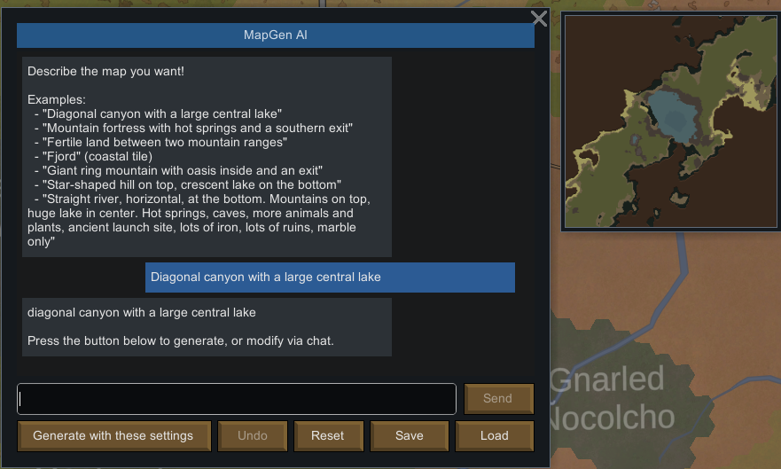
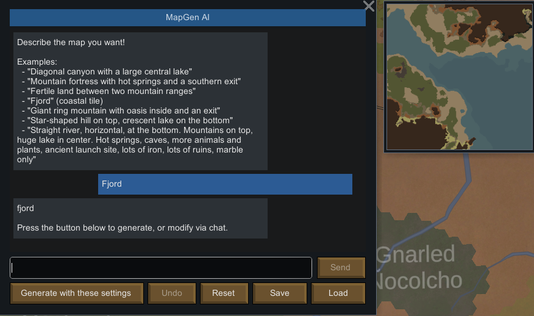
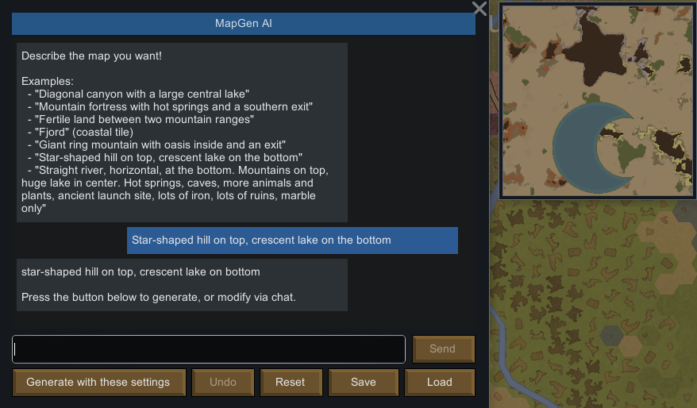

<!doctype html>
<html lang="en"><meta charset="utf-8"><title>MapGen AI — three requests, three real maps</title>
<style>
*{box-sizing:border-box}html,body{margin:0;background:#11191b}
.cover{position:relative;width:960px;height:540px;overflow:hidden;background:#122124;color:#fff6e7;font-family:'Bahnschrift',Arial,sans-serif}
.brand{position:absolute;left:29px;top:20px;margin:0;font:900 68px/1 'Arial Black',Arial,sans-serif;letter-spacing:-3px}
.brand span{color:#8bdbc8}
.pitch{position:absolute;right:31px;top:24px;font:650 25px/1.12 'Bahnschrift',Arial,sans-serif;letter-spacing:.2px;text-align:right;color:#e6eee7}
.pitch strong{font-weight:700;color:#8bdbc8}
.rule{position:absolute;top:111px;left:30px;right:30px;height:1px;background:#a0b9ae40}
.card{position:absolute;top:136px;width:278px;height:379px;overflow:visible}
.a{left:30px}.b{left:341px}.c{left:652px}
.image{position:relative;width:278px;height:278px;overflow:hidden;background:#000;outline:1px solid #a4cab658;box-shadow:0 10px 26px #0004}
.image img{display:block;position:absolute;max-width:none;image-rendering:pixelated}
.index{position:absolute;top:10px;left:10px;font:700 12px Arial,sans-serif;letter-spacing:1.8px;background:#152423de;padding:7px 9px;color:#e8f5e7}
.speech{position:absolute;top:292px;left:0;right:0;min-height:81px;background:#edf2e6;color:#122124;border-radius:3px;padding:13px 14px 12px 42px;box-shadow:0 4px 10px #0002;font:650 20px/1.2 'Bahnschrift',Arial,sans-serif}
.speech:before{content:'';position:absolute;left:24px;top:-9px;width:18px;height:18px;background:#edf2e6;transform:rotate(45deg)}
.quote{position:absolute;left:13px;top:11px;font:700 34px/1 Georgia,serif;color:#40786e}
.cursor{display:inline-block;width:2px;height:20px;vertical-align:-3px;background:#477d6a;margin-left:3px}
</style>
<section class="cover" id="cover">
 <h1 class="brand">MAPGEN <span>AI</span></h1>
 <div class="pitch">Describe your map.<br><strong>Watch it take shape.</strong></div>
 <div class="rule"></div>
 <article class="card a">
  <div class="image" data-allow-overflow></div>
  <div class="speech"><span class="quote">“</span>A canyon with<br>a lake inside.</div>
 </article>
 <article class="card b">
  <div class="image" data-allow-overflow></div>
  <div class="speech"><span class="quote">“</span>Make a fjord.</div>
 </article>
 <article class="card c">
  <div class="image" data-allow-overflow></div>
  <div class="speech"><span class="quote">“</span>A star hill and<br>a crescent lake.<i class="cursor"></i></div>
 </article>
</section>
<script>
for(const img of document.querySelectorAll('[data-crop]')){
 const place=()=>{const[x,y,side]=img.dataset.crop.split(',').map(Number),s=278/side;img.style.width=img.naturalWidth*s+'px';img.style.height=img.naturalHeight*s+'px';img.style.left=-x*s+'px';img.style.top=-y*s+'px';};
 if(img.complete&&img.naturalWidth)place();else img.addEventListener('load',place,{once:true});
}
</script>
</html>
